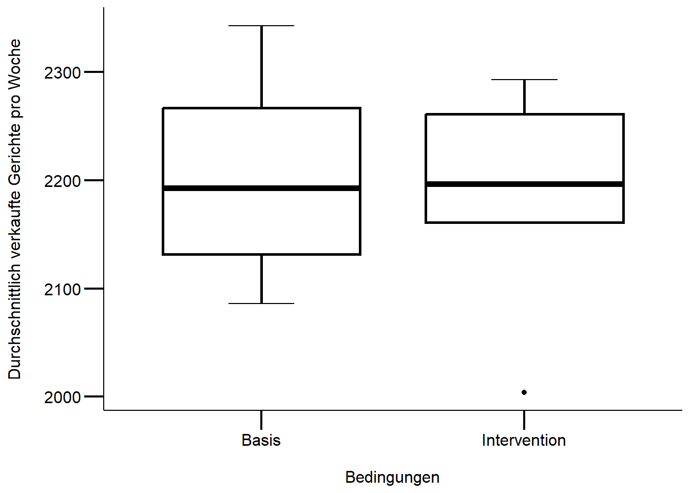

Download dieses Lösungsscript via “</>Code” (oben rechts)
Musterlösung Übung 1.1: Assoziationstest
In diesem Beispiel soll einem Klischee auf den Grund gegagen werden: Sind Aargauer überdurchschnittlich mit weissen Socken assoziiert? Die Datenerhebung basiert auf männlichen Studenten bei denen folgende beiden binären Variablen erhoben wurden:
# Daten anschauen mit erstem Google-Ergebnis für "Assoziation Plot r"assocplot(AGsocks) # Interpretation des Plots mit dem Befehl ?assocplot
Der Assoziationsplot zeigt, dass in den Daten weisse Socken bei den Aargauern überverterten und bei den Nicht-Aargauern untervertreten sind.
Für kleine Erwartungswerte in den Zellen (< 5) ist der Chi-Quadrat-Test nicht zuverlässig (siehe “Warning message”). Darum wird mit Fishers exaktem Test gearbeitet.
# Tests durchführenchisq.test(AGsocks) # Chi-Quadrat-Test nur zum anschauen.
Pearson's Chi-squared test with Yates' continuity correction
data: AGsocks
X-squared = 2.4323, df = 1, p-value = 0.1189
fisher.test(AGsocks) # "Fisher's Exact Test for Count Data"
Fisher's Exact Test for Count Data
data: AGsocks
p-value = 0.06323
alternative hypothesis: true odds ratio is not equal to 1
95 percent confidence interval:
0.6811227 78.4336189
sample estimates:
odds ratio
5.897263
Ergebnisse
In den erhobenen Daten konnte keine signifikante Assoziation zwischen Kantonangehörigkeit (AG, nicht-AG) und Sockenfarbe (weiss, nicht-weiss) festgestellt werden. Der p-Wert von Fishers exaktem Test war nur marginal signifikant (p = 0.063). Das nicht-signfikante Resultat überrascht auf den ersten Blick, denn der “odds ratio” im Datensatz ist mit 5.9 relativ hoch und 67 % der Aargauer trugen weisse Socken während nur 24 % der Nicht-Aargauer weisse Socken trugen. Doch war der Anteil von nur 6 Aargauer in der nur 35 Männer umfassenden Stichprobe relativ klein, um ein verlässliches Bild der Sockenpräferenzen der Aargauer zu machen. Insofern leuchtet es ein, das bei dieser kleinen und unausgewogenen Stichprobe die “Power” des satistischen Tests (um die Nullhypothese zu verwerfen) relativ klein ist.
\(H_0\): Es gibt keinen Unterschied in den Verkaufszahlen zwischen den Basis- und den Interventionswochen.
\(H_1\): Es gibt einen Unterschied in den Verkaufszahlen zwischen den Basis- und den Interventionswochen.
# lade Datendf <- readr::read_delim("datasets/stat1-4/Datensatz_novanimal_Uebung_Statistik1.2.csv", delim =";")# überprüft die Voraussetzungen für einen t-Testggplot(df, aes(x = condit, y = tot_sold)) +# achtung 0 Punkt fehltgeom_boxplot(fill ="white", color ="black", size =1) +labs(x ="\nBedingungen", y ="Durchschnittlich verkaufte Gerichte pro Woche\n") + mytheme
# Auf den ersten Blick scheint es keine starken Abweichungen zu einer# Normalverteilung zu geben resp. es sind keine extremen schiefen Verteilungen# ersichtlich (vgl. Skript Statistik 2)
# führt einen t-Tests durch;# es wird angenommen, dass die Verkaufszahlen zwischen den Bedingungen# unabhängig sindt_test <-t.test(tot_sold ~ condit, data = df, var.equl = T)t_test
Welch Two Sample t-test
data: tot_sold by condit
t = 0.27168, df = 9.9707, p-value = 0.7914
alternative hypothesis: true difference in means between group Basis and group Intervention is not equal to 0
95 percent confidence interval:
-115.2743 147.2743
sample estimates:
mean in group Basis mean in group Intervention
2203 2187
# alternative Formulierungt.test( df[df$condit =="Basis", ]$tot_sold, df[df$condit =="Intervention", ]$tot_sold)
Welch Two Sample t-test
data: df[df$condit == "Basis", ]$tot_sold and df[df$condit == "Intervention", ]$tot_sold
t = 0.27168, df = 9.9707, p-value = 0.7914
alternative hypothesis: true difference in means is not equal to 0
95 percent confidence interval:
-115.2743 147.2743
sample estimates:
mean of x mean of y
2203 2187
Methoden
Unser Ziel bestand darin, einen Vergleich der aggregierten Verkaufszahlen zwischen den Interventions- und Basiswochen durchzuführen. Wir gingen davon aus, dass die wöchentlichen Verkaufszahlen unabhängig voneinander sind, weshalb wir die Unterschiede zwischen den Verkaufszahlen pro Woche in den beiden Bedingungen mittels eines t-Tests untersuchten. Obwohl bei der visuellen Prüfung der Modellvoraussetzungen keine schwerwiegenden Verletzungen festgestellt wurden (abgesehen von einem Ausreißer), entschieden wir uns dennoch für einen Welch t-Test. Es sei angemerkt, dass die Gruppengröße mit jeweils n = 6 Wochen eher klein war. Trotzdem erzielten die T-Tests verlässliche Ergebnisse. Für weitere Informationen zu diesem Thema verweisen wir auf die verlinkte Studie.
Ergebnisse
In den Basiswochen werden wöchentlich mehr Gerichte verkauft als in den Interventionswochen, wie in Abbildung 1 ersichtlich ist. Allerdings ergab der Welch t-Test, dass es keine signifikanten Unterschiede in den wöchentlichen Verkaufszahlen zwischen den beiden Bedingungen (t(10) = 0.272 , p = 0.791). m die Ergebnisse weiter zu bestätigen, könnte eine \(\chi^2\)-Test durchgeführt werden, da die Gruppengröße mit n = 6 als eher klein betrachtet werden kann.

Abbildung 19.1: Die wöchentlichen Verkaufszahlen für die Interventions- und Basiswochen unterscheiden sich nicht signifikant.
Quellcode
---date: 2023-10-30lesson: Stat1thema: Grundlagen der Statistikindex: 4format: html: code-tools: source: trueknitr: opts_chunk: collapse: false---# Stat1: Lösung- Download dieses Lösungsscript via "\</\>Code" (oben rechts)## Musterlösung Übung 1.1: AssoziationstestIn diesem Beispiel soll einem Klischee auf den Grund gegagen werden: **Sind Aargauer überdurchschnittlich mit weissen Socken assoziiert?** Die Datenerhebung basiert auf männlichen Studenten bei denen folgende beiden binären Variablen erhoben wurden:- Sockenfarbe: weiss, nicht-weiss- Selbstdeklarierte Kantonsangehörigkeit: AG, nicht-AGDie Hypothese ist: Das Klischee trifft zu, weisse Socken sind überdurchschnittlich häufig mit Aargauer Studenten assoziiert.Die Datenerhebung unter 35 Studenten ergab folgende Datengrundlage:- Weisssockige Aargauer: 4- Nicht-weisssockige Aargauer: 2- Weissockige nicht-Aargauer: 7- Nicht-weisssockige nicht-Aargauer: 22```{r}#| echo: false#| results: hide# lade Packageslibrary("ggplot2")library("dplyr")library("readr")## definiert mytheme für ggplot2 (verwendet dabei theme_classic())mytheme <-theme_classic() +theme(axis.line =element_line(color ="black"),axis.text =element_text(size =12, color ="black"),axis.title =element_text(size =12, color ="black"),axis.ticks =element_line(size = .75, color ="black"),axis.ticks.length =unit(.5, "cm") )``````{r}# Matrix erstellenAargauer <-c(4, 2)names(Aargauer) <-c("Weiss", "NotWeiss")NotAargauer <-c(7, 22)names(NotAargauer) <-c("Weiss", "NotWeiss")AGsocks <-data.frame(Aargauer, NotAargauer)AGsocks <-as.matrix(AGsocks)AGsocks# Daten anschauen mit erstem Google-Ergebnis für "Assoziation Plot r"assocplot(AGsocks) # Interpretation des Plots mit dem Befehl ?assocplot```Der Assoziationsplot zeigt, dass in den Daten weisse Socken bei den Aargauern überverterten und bei den Nicht-Aargauern untervertreten sind.Für kleine Erwartungswerte in den Zellen (\< 5) ist der Chi-Quadrat-Test nicht zuverlässig (siehe "Warning message"). Darum wird mit Fishers exaktem Test gearbeitet.```{r}# Tests durchführenchisq.test(AGsocks) # Chi-Quadrat-Test nur zum anschauen.fisher.test(AGsocks) # "Fisher's Exact Test for Count Data"```### ErgebnisseIn den erhobenen Daten konnte keine signifikante Assoziation zwischen Kantonangehörigkeit (AG, nicht-AG) und Sockenfarbe (weiss, nicht-weiss) festgestellt werden. Der *p*-Wert von Fishers exaktem Test war nur marginal signifikant (*p* = 0.063). Das nicht-signfikante Resultat überrascht auf den ersten Blick, denn der "odds ratio" im Datensatz ist mit 5.9 relativ hoch und 67 % der Aargauer trugen weisse Socken während nur 24 % der Nicht-Aargauer weisse Socken trugen. Doch war der Anteil von nur 6 Aargauer in der nur 35 Männer umfassenden Stichprobe relativ klein, um ein verlässliches Bild der Sockenpräferenzen der Aargauer zu machen. Insofern leuchtet es ein, das bei dieser kleinen und unausgewogenen Stichprobe die "Power" des satistischen Tests (um die Nullhypothese zu verwerfen) relativ klein ist.## Musterlösung Übung 1.2: t-Test> Leseempfehlung Kapitel 2 von [Manny Gimond](https://mgimond.github.io/Stats-in-R/z_t_tests.html)### Null- und Alternativhypothese$H_0$: Es gibt keinen Unterschied in den Verkaufszahlen zwischen den Basis- und den Interventionswochen.$H_1$: Es gibt einen Unterschied in den Verkaufszahlen zwischen den Basis- und den Interventionswochen.```{r}# lade Datendf <- readr::read_delim("datasets/stat1-4/Datensatz_novanimal_Uebung_Statistik1.2.csv", delim =";")# überprüft die Voraussetzungen für einen t-Testggplot(df, aes(x = condit, y = tot_sold)) +# achtung 0 Punkt fehltgeom_boxplot(fill ="white", color ="black", size =1) +labs(x ="\nBedingungen", y ="Durchschnittlich verkaufte Gerichte pro Woche\n") + mytheme# Auf den ersten Blick scheint es keine starken Abweichungen zu einer# Normalverteilung zu geben resp. es sind keine extremen schiefen Verteilungen# ersichtlich (vgl. Skript Statistik 2)``````{r}# führt einen t-Tests durch;# es wird angenommen, dass die Verkaufszahlen zwischen den Bedingungen# unabhängig sindt_test <-t.test(tot_sold ~ condit, data = df, var.equl = T)t_test# alternative Formulierungt.test( df[df$condit =="Basis", ]$tot_sold, df[df$condit =="Intervention", ]$tot_sold)```### MethodenUnser Ziel bestand darin, einen Vergleich der aggregierten Verkaufszahlen zwischen den Interventions- und Basiswochen durchzuführen. Wir gingen davon aus, dass die wöchentlichen Verkaufszahlen unabhängig voneinander sind, weshalb wir die Unterschiede zwischen den Verkaufszahlen pro Woche in den beiden Bedingungen mittels eines t-Tests untersuchten. Obwohl bei der visuellen Prüfung der Modellvoraussetzungen keine schwerwiegenden Verletzungen festgestellt wurden (abgesehen von einem Ausreißer), entschieden wir uns dennoch für einen Welch t-Test. Es sei angemerkt, dass die Gruppengröße mit jeweils n = 6 Wochen eher klein war. Trotzdem erzielten die T-Tests verlässliche Ergebnisse. Für weitere Informationen zu diesem Thema verweisen wir auf die verlinkte [Studie](https://scholarworks.umass.edu/cgi/viewcontent.cgi?article=1307&context=pare).### ErgebnisseIn den Basiswochen werden wöchentlich mehr Gerichte verkauft als in den Interventionswochen, wie in Abbildung 1 ersichtlich ist. Allerdings ergab der Welch t-Test, dass es keine signifikanten Unterschiede in den wöchentlichen Verkaufszahlen zwischen den beiden Bedingungen (*t*(`r round(t_test$parameter[[1]],digits = 0)`) = `r round(t_test$statistic, digits = 3)` , *p* = `r round(t_test$p.value, digits=3)`). m die Ergebnisse weiter zu bestätigen, könnte eine $\chi^2$-Test durchgeführt werden, da die Gruppengröße mit n = 6 als eher klein betrachtet werden kann.```{r}#| echo: false#| label: fig-ggplot-boxplot-final#| fig.cap: Die wöchentlichen Verkaufszahlen für die Interventions- und Basiswochen unterscheiden#| sich nicht signifikant.#| out.width: 80%# zeigt die Ergebnisse mit einer Abbildungp <-ggplot(df, aes(x = condit, y = tot_sold)) +# erzeugt sogenannte Whiskers mit Strichen, achtung reihenfloge zählt hierstat_boxplot(geom ="errorbar", width = .25) +geom_boxplot(fill ="white", color ="black", size =1) +labs(x ="\nBedingungen", y ="Durchschnittlich verkaufte Gerichte pro Woche\n") + mythemeprint(p)```